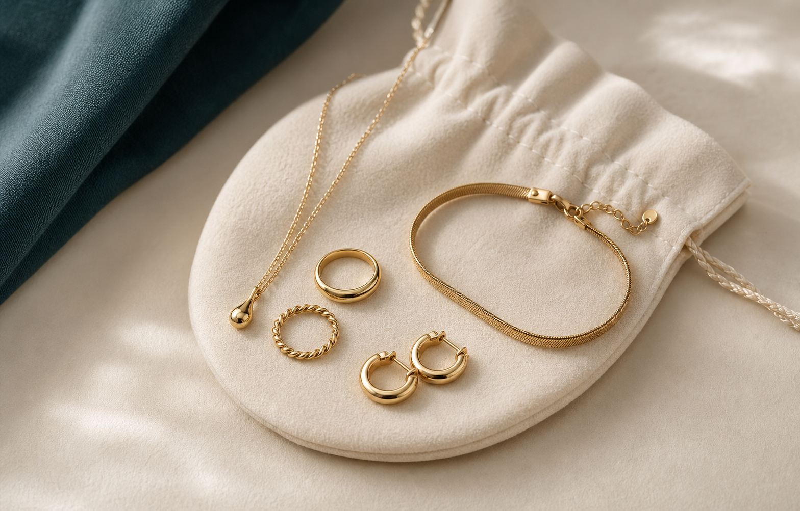
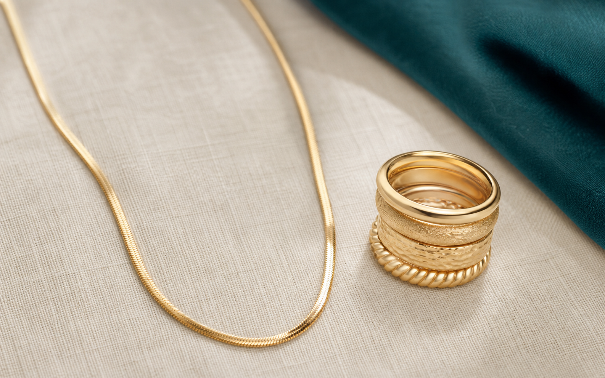
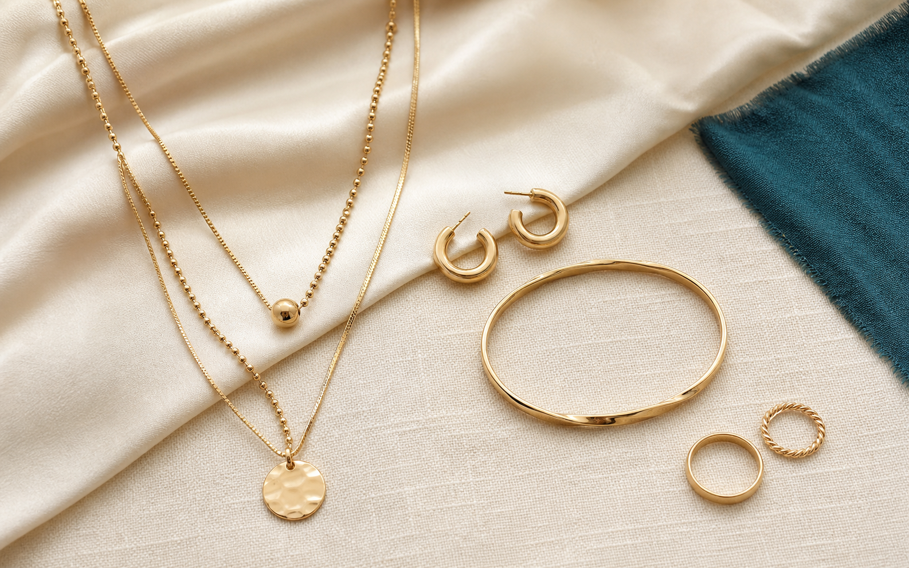
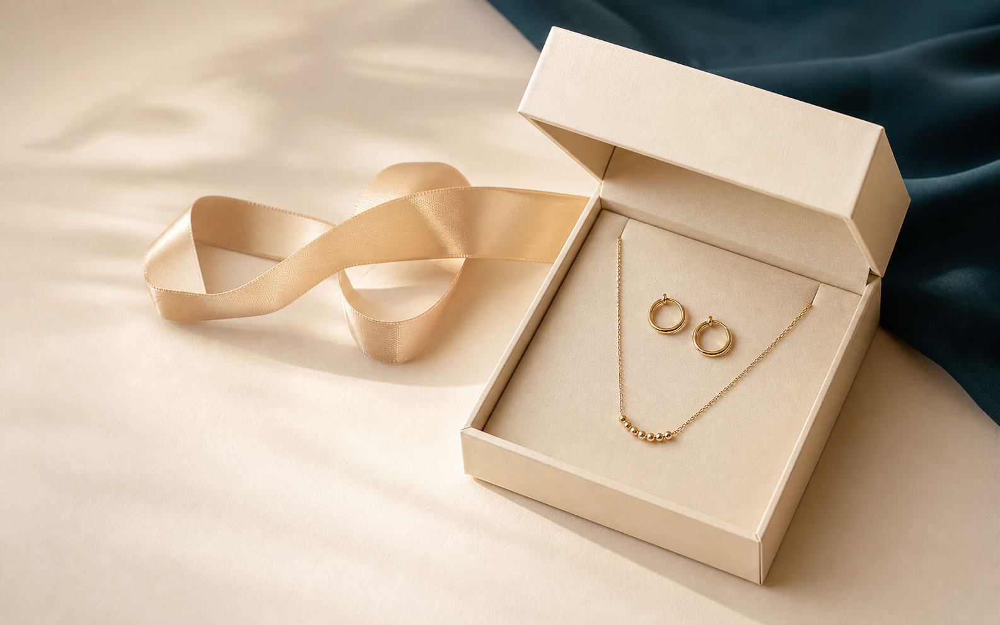

How to Care for Anti-Tarnish Jewellery: 7 Simple Tips
Easy habits that help your favourite everyday pieces stay clean, comfortable and ready to wear.
Helpful guides for caring for, styling and gifting jewellery you love to wear.

Easy habits that help your favourite everyday pieces stay clean, comfortable and ready to wear.

Learn the terms, what to look for and how to choose a piece that suits your routine.

Build easy combinations with necklaces, earrings, rings and bracelets for every plan.

A simple way to choose a meaningful jewellery gift for celebrations and everyday milestones.
Anti-tarnish jewellery is a lovely choice when you want easy, everyday shine. Like any accessory you wear often, it still benefits from a little care. A few simple habits can help keep your rings, earrings, necklaces and bracelets looking their best between wears.
The goal is not a complicated routine; it is mindful everyday care. Explore Zevorelle anti-tarnish jewellery for versatile styles you can make part of your daily rotation.
Jewellery descriptions can include several useful terms, and two of the most common are anti-tarnish and gold-plated. They are not opposites: a piece may have a gold-coloured finish and also be designed with features intended to help it resist tarnishing. Understanding the language makes it easier to choose with confidence.
Anti-tarnish refers to jewellery made or finished with the aim of reducing the dulling or colour change that can happen over time. The materials, coating and care routine all play a part. It does not mean a piece needs no care at all, but it can be a practical choice for jewellery you plan to wear regularly.
Gold-plated jewellery has a layer of gold-coloured material applied over another base metal. The look, thickness and durability of that finish can vary from piece to piece. Product details and care guidance are useful because they explain how to enjoy the finish for longer.
Start with how you will wear it. For an everyday necklace or pair of earrings, look for a comfortable, skin-friendly design and clear care instructions. For a special occasion, you may prioritise a statement shape, layered look or a warm gold finish. At Zevorelle, our collection focuses on anti-tarnish, water-resistant styles that are easy to wear and easy to style.
The best everyday jewellery feels like part of your outfit, not an afterthought. You do not need a large collection to create polished combinations. Begin with a few pieces you enjoy wearing, then use proportion and repetition to make your look feel intentional.
Choose the feature you want to notice first: a pair of earrings, a pendant necklace, a stack of rings or a bracelet. Keep the other pieces simpler so the look has balance. A delicate pendant and small hoops, for example, work beautifully for workdays and casual plans alike.
When layering necklaces, combine two or three lengths rather than several pieces at the same point. Start with a shorter chain, add a pendant at a medium length and finish with a slightly longer style. The small gaps help every piece remain visible.
Mix a statement ring with slimmer bands, or wear matching shapes across two fingers. Leave one or two fingers bare so the stack has room to stand out. If you are new to stacking, begin with two rings and build from there.
A repeated detail brings the look together. Pair warm gold-toned earrings with a similar-toned necklace, or echo a pearl accent in both your earrings and ring. Browse the Zevorelle collection for easy-to-layer pieces that work from day to night.
Jewellery is a meaningful gift because it can become part of someone's everyday story. Whether you are celebrating a birthday, a friendship, a festival or a personal milestone, the best choice is usually one that reflects her style and gives her plenty of ways to wear it.
Choose a delicate necklace, small earrings or a slim bracelet. Simple pieces suit many wardrobes and are easy to wear again and again.
Look for an eye-catching ring, textured hoop or layered necklace. A more expressive design can become the focal point of an outfit while still feeling personal.
A versatile pair of earrings is a thoughtful place to start. Consider her preferred metal tone and the kinds of outfits she wears most often, then choose a shape that feels timeless rather than trend-led.
Choose a piece that can carry the memory: a necklace she can wear often, a bracelet for her collection or a ring with a silhouette that feels distinctively hers. Need more help finding the right piece? Visit our frequently asked questions or contact Zevorelle before you choose.
Explore anti-tarnish, water-resistant jewellery designed for easy styling and everyday moments.